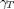

Heroes Development
Contents
How to release to the public domain a new version of heroes toolbox
To release to the public domain a new version of heroes toolbox we should proceed into the following steps:
- Modify file heroesVersion.m by by adding the next two items * Modify version number string by changing the usual format 'x.y.z (Ryyyya)' where x, y and z are integers denoting version number, yyyy is the release year and a the version letter * Add relevant comments such as bug fixes, new features etc, to the function help text just to briefly summarize what it is included in the new release.
- Compress the whole heroes toolbox tree by packaging from heroes directory downwards, copy it somewhere in your PC and then uncompressed it there, in such a way that a directory called heroes is created.
- Once uncompressed remove the hidden directory .svn at the top level directory of hereoes, that is heroes/.svn
How to install heroes
- Download a fresh copy of the source code of heroes from UPM Moodle
Please note that before you could download the source code you should ask for permission to be invited to belong to PFC-AG. To ask for permission to download the source code please send an email to mailto:oscar.lopez.garcia@upm.es
Once you are allowed to download the source code follow the next instructions.
- Uncompress the tar file using your compression software of choice (winzip,winrar,gunzip) somewhere in your PC box. Let's say that the directory is "path_to_HEROES". After uncompressing the file a directory called heroes will be created.
- Startup matlab and add "path_to_HEROES/heroes" directory to MATLAB search path. To achieve this, you should do either:
* Add the following line to your startup.m file:
path(path,'path_to_HEROES/heroes'); [linux platforms]
path(path,'path_to_HEROES\heroes'); [Windows platform] * File->Set Path ... ->Add Folder and select "path_to_HEROES/heroes"
then Save and Close- Check installation by typing the following sequence of commands at matlab prompt:
>> setHeroesPath >> doc heroes
Development Notes
The aim of this file is to serve as a guide for the developers, to aid us to get clean and uniform code. This document is still incomplete and moreover it is a blatant rip-off of the LyX code rules taken from http://www.lyx.org/cgi-bin/viewcvs.cgi/*checkout*/lyx-devel/development/Code_rules/rules]
We really like to have new developers joining the HEROES Project. To promote contributed code in readable, maintenable state we have written down this code rules with the hope that it will help to achieve these goals. So we have put together some guidelines and rules for developers.
General
These guidelines should save us a lot of work while cleaning up the code and help us to have quality code. Hopefully problems coming from unfinished projects by people who could left the team will be avoided if the code is easy to hand over to somebody else.
In general, if you want to contribute to the main source, we expect at least that you:
- follow the most important rule first: kiss (keep it simple stupid), always use a simple implementation in favor of a more complicated one. This eases maintenance a lot.
- write good MATLAB code: Readable, well commented and taking advantage of the structure, function_handles, cell data types. Follow the formatting guidelines. See Formatting.
- adapt the code to the structures already existing in HEROES, or in the case that you have better ideas, discuss them on the HEROES google group before writing the code.
- take advantage of the MATLAB TOOLBOXES. Especially don't use custom functions when a standard function is available; learn to use the algorithms and functors in the MATLAB TOOLBOXES.
- be aware of potential errors and write exception safe code.
- document all variables, functions, new data types etc . We are using the convention provided by MATLAB that function head comments are accesible by the help command.
Formatting
- Please be gentle with OPERATING SYSTEMS (OS) which are different from the one you develop. Fortunately, MATLAB has plenty of functions to assure cross platform compatibility. Use them and try to think always that out there people are using LINUX, MACOSX and other flavours More specifically: o Take into account that function files names and directory names are case sensitive in almost every OS except Windows. That is, file name case matters! A file with the name 'FILE' is distinctly treated of a file with the name 'File'. o Filesystems use different file separation character, i.e. \ or / Use filesep, fullfile and other matlab functions to guarantee cross platform compatibility. o File Naming Limitations: File and directory names should not contain spaces; not all platforms handle spaces well. Commonly-reserved filenames should also be avoided.
- Only one assignation on each line. a = linspace(0,1,1000); b = zeros(10); -NOT- int a = linspace(0,1,1000); b = zeros(10); % wrong
- structures s = struct( ... 'one',1, ... 'two',2, ... 'three',3 ... ); -NOT- s = struct('one',1,'two',2,'three',3); % wrong
- Naming rules for variables
- Use descriptive but simple and short names. Variables to denote parameters are written as follows In case of a greek parameter translate the greek name to english and If it is latin just use the latin name. If there are subfix do not use underscore, i.e. "_" just put the first letter of the suffix in uppercase following camel style rules. See <http://en.wikipedia.org/wiki/CamelCase camel style rules at wikipedia>. Here it is a brief example of variable names he helicopter data type mainRotor main rotor of an helicopter tailRotor tail rotor of an helicopter fuselage fuselage of an helicopter nd prefix to denote nondimensional data type Omega $\Omega$
- Functions are named, preferably, like thisLongVariableName (CamelStyle).
- Do not name variables like FULLCAPITAL
- Try to use small caps and use Camel style or _ to join words when naming variables
- Formatting
- Adapt the formatting of your code to the one used in the other parts of HEROES. In case there is different formatting for the same construct, use the one used more often.
- Declarations
- Avoid the use of global variables.
- Functions
- If a main function uses a function that is going to be used only by the main function it should be placed at the same file. Only when the function is going to be used by others or it has been demonstrated that is important enough to have a file of its own then move it to one *.m file.
- Documentation
- The documentation is generated from the header files. - You document for the other developers and USERS, not for yourself. - You should document what the function does, not the implementation. - in the body of the .m files you document the implementation. - Use the inline keyword *%FIXME* to make clear some code lines that can be error prone or dirty hacks
- LaTeX versus TeX string interpreter
Each time we type setHeroesPath we set by default textinterpreter to LaTeX. Therefore every time you put a label or text using xlabel, ylabel, etc you should quote the text using double dollar sign, that is $$\beta$$, see also testLatexInterpreter.m at heroesTest/common. Please note, that setPlot behaves in the same way. Finally and because most of the active matlab versions that we are using date back to 2010 we need to set legend interpreter following the next route l=legend('$$\frac{\partial \beta_{1C}}{\partial \beta_{1S}}$$'); set(l,'interpreter','latex')
- Verification and Validation*
- Always you have finished coding run tester command to ensure that you do not have broken any other part of the code. This is particularly important when you have been working in the parts of the code that may or might break others people work
- When you implement a new feature please be nice and provide a significant number of tests that you consider important to verify the functionality of the feature.
- Do not use "clc" command at test level functions in order to permit to have a complete visual feedback about the outcome of test suite run
- Do not use "pause" command at test level functions in order to permit to run the whole test suite in one run
TODO LIST
This TODO list is split into two main lists. One describes general (long term) TODO's the other one describes minor TODO's or small tasks that are quite similar to bug fixing. The long term todo list is especially well suited to be assigned to a new student or developer. However, minor todo list is the best way to assign small task to a new student or developer in order to become acquainted with heroes toolbox.
LONG TERM TODO LIST
- TFG proposal for a software specification of rotor blade definition. The goal of the TFG is to specify a data type to model rotor blades. The data type should describe the following information: - general chord distribution - general twist distribution - arbitrary airfoil distribution - arbitrary mass distribution (for this item perhaps we can define an additional task which consists on specifying the airfoil structural elements and define functions to compute mass, flap, lag and torsional stiffness distributions, etc.)
- Integrate the dynamic equation of autorrotation for a generalised model of trim and flight dynamics. We have to analyse what the dynamic condition of autorotation means (main rotor and tail rotor syncronised without engine but with transmission losses active...etc)
- Enabling and disabling degrees of freedom from the state vector in an authomatic way both for trim and fligh dynamic problems. We have to think of a generelised way to substitute degrees of freedom by contrains (no movement, springs...with unknown reactions, diplacements of velocities)
- Integration of the pararrotor problem. When the fuselage rotates with the main rotor. In our fomulation it means , hece is not practical. One way is to add a new body "hubheigh" with a mass an inertia tensor. A parrarotor would be a group of blades plus a hub height without rotor
- Design a methodology to obtain reasonable aerodynamic actions on fuselage.
- Look for other aerodynamic fuselage data and establish a high quality data base.
- Try to distill generic functions to be applied to non documented helicopter fuselages to get reasonable aerodynamic data of the fuselage.
- Define and solve the Preliminary Helicopter Design problems posed at TFG-TFM
- Design a trim-based performance module in order to compare trim with energy. This module provides a more detailed and accurate approach to helicopter performance.
- DEsign a module to compute helicopter inertia properties from the positioning of the main helicopter components.
- Design a module to numerically define and compute rigid helicopters
- Extend the current aerodynamic model for stablizer surfaces. For the moment being, only rectangular surfaces are considered. We need to take into account: (a) trapezoidal wings (b) swept wings.
MINOR TODO LIST
- Digitize stability root locus of Lynx and Puma from Padfield and improve the test matlab:edit('Bo105DerivativesTest'). The following steps are required:
- use digitize2 and add the root locus data to matlab:edit('getPadfieldEigenvaluesMap')
- enhance the test matlab:edit('Bo105DerivativesTest')
- Document that most of the trimState and stability functionality was implemented using and if hook to consider axial or forward flight depending on  (solveTrim and solveTrimAxial). It would be nice also that a good explanation to understand why these two function exist should be added
- Comparison of power curve using energy and trim. The test test_energyVStrim implements this comparison. The following subtasks are needed for this test: - nondimensional format of the curve - Define a strategy to compute energy parameter from the trim power curve (system model identification) - Add the energy power curve when the tail rotor power is computed as an energy rotor
- Function stathe2rigidhe cleanup. - options should be fixed to be the less intrusive - one or two horizontal tail planes should be an option - parseNested is use only at this function, why? Is this a clear sympthon that this is bad programming?
- Energy option to consider different ways to compute the tail rotor power consumption (remember the he from US). There has been consider but it is not well developed. At least we should recover the next functionality plus fenestron implementation.
if isa(options.tailrotor2cp,'float')
p_0 = options.tailrotor2cp.*(P_0);
p_i = options.tailrotor2cp.*(P_i + P_f);
elseif strcmp(options.tailrotor2cp,'q2ct')
p_0 = zeros(length(V),1);
p_i = zeros(length(V),1);
T_tr = (P_0 + P_i + P_f)./he.mr.Omega/he.x_tr;
options.tr = 'yes';
for i=1:length(V)
[p_0(i), p_i(i)] = getPowerRotor(V(i),h,0,T_tr(i),he.tr,options);
end
elseif strcmp(options.tailrotor2cp,'bramwell')
f = (he.tr.R/he.mr.R) ...
*(he.tr.chord/he.mr.chord) ...
*(he.tr.nb/he.mr.nb); % Fixed Ana
p_0 = f*P_0;
p_i = f*P_i;
elseif strcmp(options.tailrotor2cp,'no')
p_0 = zeros(length(V),1);
p_i = zeros(length(V),1);
end- Cleanup of helicopter data base (lookup at heroesData) - minimal written description of helicopter characteristic and use and document data source shlould be added
- There exist many uncontrolled (unversioned) copies of helicopters. This is a bad habit we should stop copying helicopters. It is better to define a new/modification helicopter by loading the original one and then overwriting the corresponding fields with the new values.
- Helicopters should have a way to define the weight and inertia to consider several weight configurations, i.e. heavy configuration, medium, low and empty, for instance.
- Prouty's reference helicopter should be added
- AH-64-Apache should be added (Oscar has a lot of high quality technical information and there readily exist also many validation data)
- UH-60-Blackhawk should be added (Oscar has a lot of high quality technical information and there readily exist also many validation data, see ARL-TR-1986 from Kim because at this refereence there exist flight test data compared with energy calculations)
- MD-Explorer should be added (Oscar has some technical information)
- Function plotTrimState output figure variables cleanup. The choice of trim state variables to be plot should be discussed yet.
- Function A and B constants model should be modified because A is related to , that is and this can cause potential errors (energy method power estimation can be quite wrong because A and B model is selected together with a value for not equal to 0)
- Change f=induced(lambda_i,mu), and make the frame transformations before
- Add Puma, Lynx and BlackHawk to rigidHe and fuselage databases
- Create a getFlightCondition function in order to avoid errors in muT signs?
- Add geometric conning angle
- Vectorized functions
- Discuss about ndGeometry.BFtr field which from Oscar's point of view is an interference function between tail rotor and vertical fin and it should go to the global options structure
- Discuss about how and where force, power, velocity characteristics units should be strored (at ndHe? at he? ...?)
- Check that in Energy calculation the slow, high and none velocity hypotheis are trasnmitted to all fucntions. For instance wheh the energyEquations is run only the 'none' option is active
- Review all the autorroation calculations within energy. They are based on simple hypothesis such as CW=CWrated of mininum gammaT in autorrotaion is that corresponding to VH = VC
- latex versus tex behaviour. Currently we are using different format labels for typesetting the figures. We use both tex notation, i.e. '\alpha' or latex notation '$$\alpha$$'. So we should fix by adopting one convention based on windows and unix capabilities to display properly the latex/tex fonts. Moreover we should fix the problem with legends because it seems that they does not are controlled by defaulttextinterpreter property.
- Dany Acosta requirement about controling heroes contour plots in order to especify a number of levels together with the values. It is quite easy to implement. The most complicated part is how to define the default values of the contours.